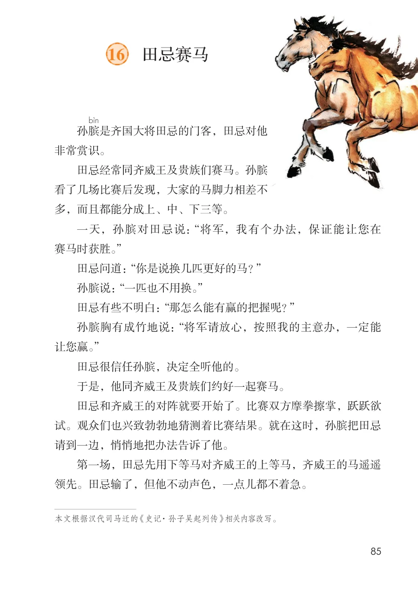
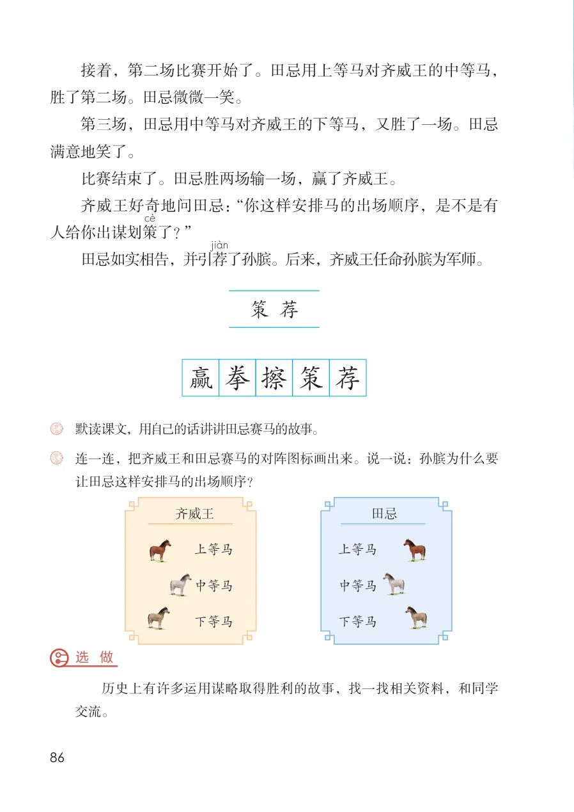

展开章节菜单
课本第 85 页
16 田忌赛马
孙膑
是齐国大将田忌的门客，田忌对他
非常赏识。
田忌经常同齐威王及贵族们赛马。孙膑
看了几场比赛后发现，大家的马脚力相差不
多，而且都能分成上、中、下三等。
一天，孙膑对田忌说：“将军，我有个办法，保证能让您在
赛马时获胜。”
田忌问道：“你是说换几匹更好的马？”
孙膑说：“一匹也不用换。”
田忌有些不明白：“那怎么能有赢的把握呢？”
孙膑胸有成竹地说：“将军请放心，按照我的主意办，一定能
让您赢。”
田忌很信任孙膑，决定全听他的。
于是，他同齐威王及贵族们约好一起赛马。
田忌和齐威王的对阵就要开始了。比赛双方摩拳擦掌，跃跃欲
试。观众们也兴致勃勃地猜测着比赛结果。就在这时，孙膑把田忌
请到一边，悄悄地把办法告诉了他。
第一场，田忌先用下等马对齐威王的上等马，齐威王的马遥遥
领先。田忌输了，但他不动声色，一点儿都不着急。
本文根据汉代司马迁的 《史记·孙子吴起列传》相关内容改写。
查看教材原页（保留全部图片、注音与原始排版）

课本第 86 页
接着，第二场比赛开始了。田忌用上等马对齐威王的中等马，胜了第二场。田忌微微一笑。
第三场，田忌用中等马对齐威王的下等马，又胜了一场。田忌满意地笑了。
比赛结束了。田忌胜两场输一场，赢了齐威王。
齐威王好奇地问田忌：“你这样安排马的出场顺序，是不是有人给你出谋划策
了？”
田忌如实相告，并引荐
了孙膑。后来，齐威王任命孙膑为军师。
连一连，把齐威王和田忌赛马的对阵图标画出来。说一说：孙膑为什么要
让田忌这样安排马的出场顺序？
历史上有许多运用谋略取得胜利的故事，找一找相关资料，和同学
字词积累
策荐
字词积累
荐擦策拳赢
字词积累
齐威王田忌
字词积累
上等马
字词积累
上等马
字词积累
中等马
字词积累
中等马
字词积累
下等马
字词积累
下等马
练习与思考
默读课文，用自己的话讲讲田忌赛马的故事。
练习与思考
选 做
练习与思考
交流。
查看教材原页（保留全部图片、注音与原始排版）
